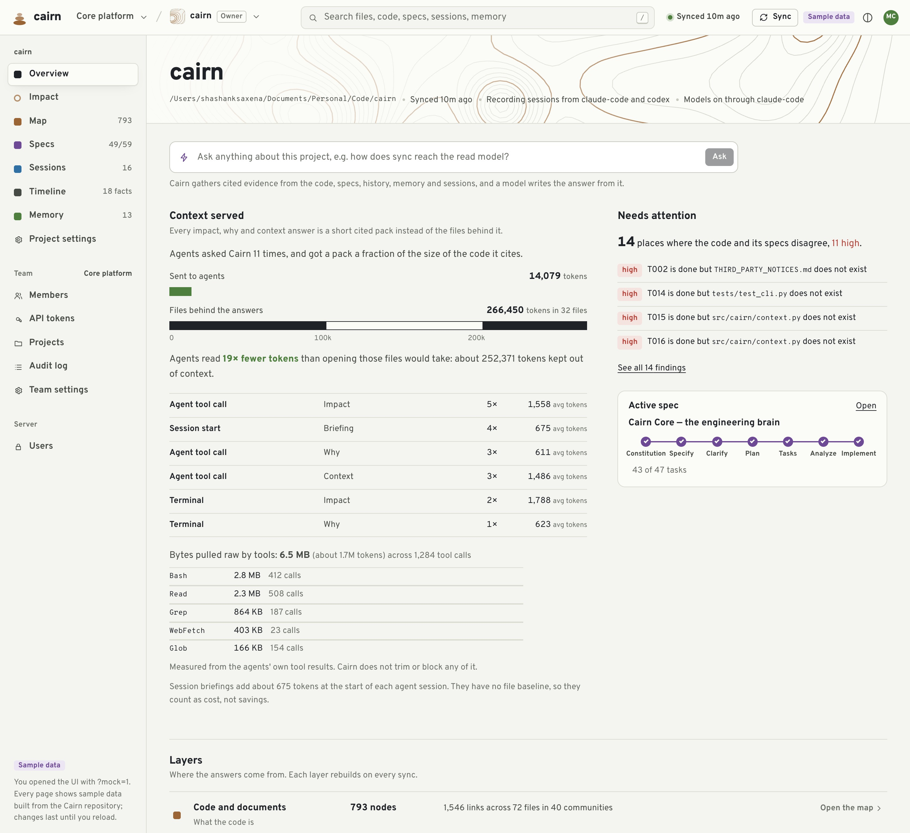
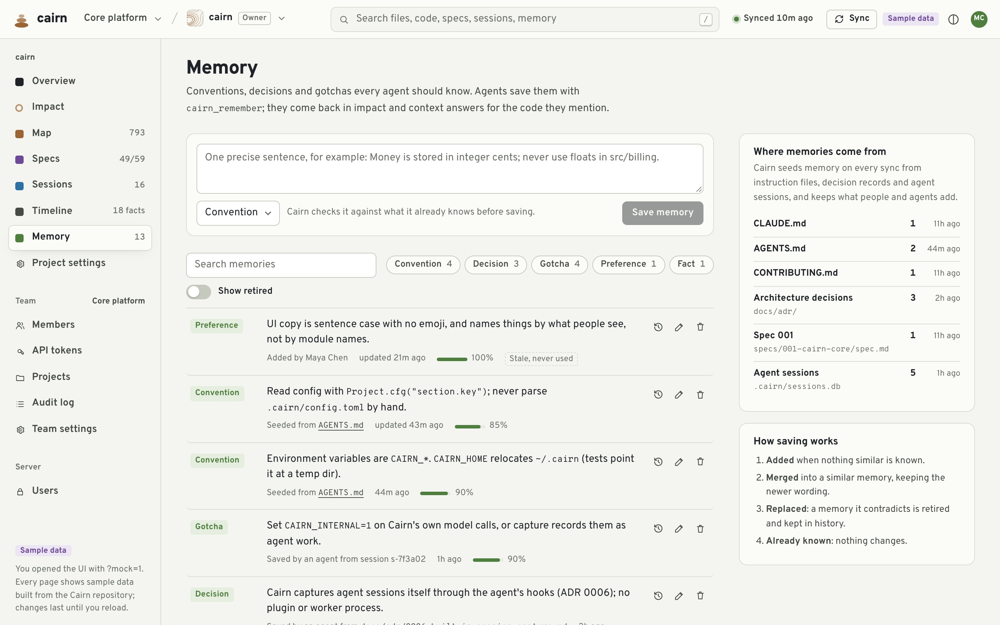

New in Cairn
Your agent keeps its place
and gets smarter every session.
localhost · cairn ui · Overview

sample data
what Cairn served
new: what tools pulled raw
Claude Code · shop
Context window full · compacting conversation…
PreCompact → Cairn saved a resume snapshot
Conversation compacted ·
SessionStart (compact)
· Cairn hands back:
snapshot built by resume.py from the test-suite session
snapshot size
0
bytes of 2,048 max
What not to repeat
Four kinds of event, recorded from the session itself.
no model call · explicit signals only
rejected approach
obs 2
Rejected by the user: Bash `git push --force`
error then fix
obs 3
Fixed after an error: Bash `pytest tests/test_gateway.py`
retry loop
obs 4
Retry loop: Bash `npm run build`
user correction
obs 5
User correction: No, don't change the old gateway client; wrap it in the retry helper instead
next session ›
Found 2 observation(s) matching "git push":
| ID | T | Title
| #2 | ⚖ | Rejected by the user: Bash `git push --force`
| #1 | ✓ | Add refund retries to the gateway
Use cairn_session_observations(ids=[...]) for full details.
localhost · cairn ui · Memory

sample data
unused 90 days, so it ranks lower
conventions and decisions never age
cairn
Institutional memory for coding agents.
Keeps its place.
Gets smarter every session.
$
uv tool install --python 3.12 cairn-brain
$
cd your-repo && cairn
One command per repository. Runs locally.